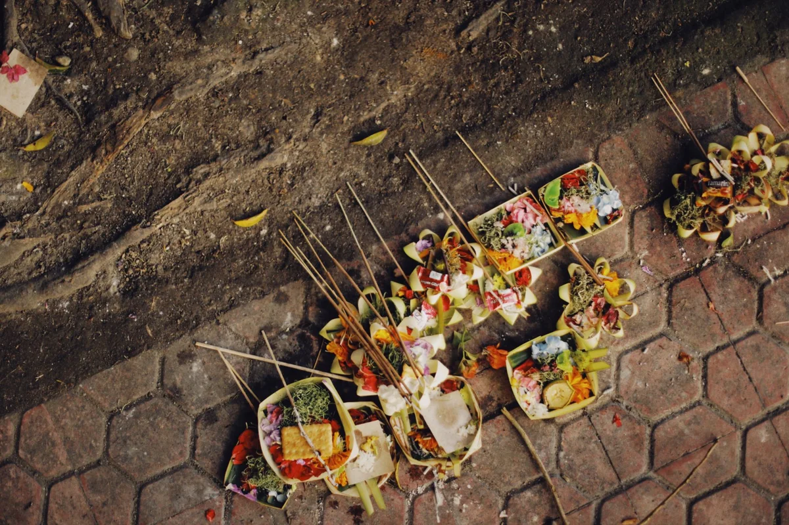
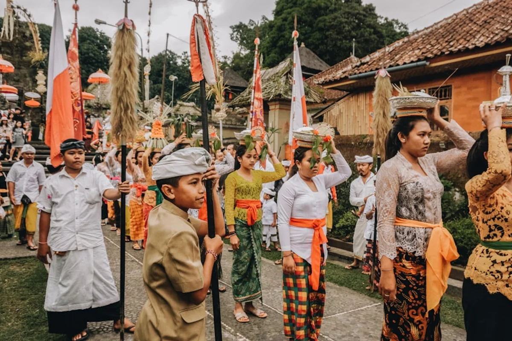

Introduction
Few destinations in the world generate as much fascination as Bali, and in 2025 that fascination is intensifying. Following a wave of viral content about Balinese spiritual rituals and a renewed global interest in slow travel and meaningful cultural experiences, the island is attracting a different kind of visitor: one who wants to understand, not just photograph. The curiosità culturali tradizioni Bali induismo conversation has moved well beyond travel forums and into mainstream cultural discourse, with documentaries, podcasts, and even academic papers exploring what makes this small Indonesian island so spiritually and socially distinct.
Bali is not simply a tropical paradise with pretty temples. It is one of the last places on earth where Hinduism, in a uniquely localised form, shapes nearly every aspect of daily life, from the food placed on the street each morning to the architecture of family compounds, from the way children are named to the rules governing when an entire island falls silent. Understanding these layers is not just intellectually rewarding; it fundamentally changes how a visit feels.
This is not a standard list of fun facts. What follows is a genuine attempt to map the cultural logic of Bali, to explain why things are the way they are, and to surface details that most travel content ignores entirely.
Agama Hindu Dharma: The Hinduism That Exists Nowhere Else
The Hinduism practised in Bali, known as Agama Hindu Dharma, is not the same as the Hinduism of India. It arrived in Bali around the 11th century, filtered through the Majapahit Empire of Java, and then evolved in isolation for centuries after Islam spread across the rest of the Indonesian archipelago. The result is a belief system that blends Hindu theology with animist traditions, ancestor worship, and deeply localised cosmology.
The most visible expression of this is the concept of Tri Hita Karana, a Balinese philosophical framework that translates roughly as "three causes of wellbeing." These three causes are harmony with God, harmony with other humans, and harmony with nature. Every aspect of Balinese life, including the layout of a village, the design of a rice field, and the scheduling of ceremonies, is organised around maintaining this balance. UNESCO recognised the Balinese subak irrigation system as a World Heritage Site in 2012 precisely because it embodies Tri Hita Karana in physical form.
Unlike mainland Hindu traditions, Balinese Hinduism places enormous emphasis on local spirits and ancestors. Every family compound contains a small shrine dedicated to ancestral spirits. Every village has three main temples: the Pura Puseh (temple of origin), the Pura Desa (village temple), and the Pura Dalem (temple of the dead). The spiritual landscape is so densely mapped that there are estimated to be over 20,000 temples across the island, a figure that works out to roughly one temple for every 200 inhabitants.
This is the foundational context for almost every cultural curiosity on the island. The traditions are not arbitrary or merely decorative; they are the practical operating system of a society built around spiritual balance.
Canang Sari: The Daily Offering Covering Every Street in Bali
Every morning, before the tourist cafés open and before the motorbikes fill the roads, Balinese women (and increasingly men) prepare and place canang sari: small square offerings woven from coconut palm leaves and filled with flowers, rice, incense, and sometimes a cracker or a coin. These are placed on doorsteps, on the bonnets of cars, at the base of trees, inside shops, on temple steps, and at intersections.
The preparation alone is a significant daily commitment. A typical household might place between 10 and 30 canang sari each morning. Across the whole island, millions of these offerings are made every single day of the year. The flowers inside each canang sari follow a specific directional logic: white flowers face east (toward Iswara), red flowers face south (toward Brahma), yellow or orange flowers face west (toward Mahadewa), and blue or green flowers face north (toward Wisnu). The arrangement is not decorative; it is a cosmological map.
What surprises many visitors is how quickly the offerings are stepped on, driven over, or rained upon. This is not disrespect. Once the offering has been made and the incense has burned, the spiritual intention has been received. The physical object is just a vessel that has served its purpose. Balinese Hinduism is pragmatic in this way: the ritual act matters far more than the preservation of its material form.
For travellers, the sight of morning markets in Ubud filled entirely with flowers and palm-leaf containers for canang sari is one of the most quietly extraordinary experiences the island offers. It is also a useful reminder that Balinese spirituality is not performed for tourists; it exists whether visitors are watching or not.

Nyepi: The Day Bali Shuts Down Completely
Once a year, the entire island of Bali goes dark and silent for 24 hours. Nyepi, the Balinese Hindu New Year, falls on the day after the new moon of the ninth month of the Saka calendar, which typically places it in March. In 2025, Nyepi fell on 29 March.
The rules during Nyepi are absolute and enforced by community-based security groups called pecalang. No one may leave their home. No fires or artificial lights may be used. No work is permitted. No entertainment is allowed. The airport closes entirely: Ngurah Rai International Airport, one of the busiest in Southeast Asia, suspends all flights for the full 24 hours. Even the internet has been voluntarily shut down in past years, following an agreement between the Balinese Hindu Council and local providers, though this has varied by year.
The spiritual logic is elegant. The demons and malevolent spirits that circle the earth are meant to believe, seeing a dark and silent island, that Bali is uninhabited and therefore not worth troubling. The silence is a collective act of spiritual deception, a way of protecting the entire island at once.
The evening before Nyepi is one of the most spectacular events in the Balinese calendar. Ogoh-ogoh, enormous papier-mâché monsters representing negative forces, are paraded through the streets to loud music, torch light, and the noise of percussion instruments. The procession is designed to stir up and draw out any malevolent spirits before the silence begins. These sculptures, some reaching several metres in height, are built by local youth organisations (sekaa teruna) over months, and the craftsmanship is extraordinary. After the parade, they are traditionally burned.
For anyone visiting Bali around late March, experiencing Nyepi is one of the most singular cultural events available anywhere in the world. Being in one of the island's hotels during the silence, with no traffic, no music, and a sky full of stars undimmed by light pollution, is genuinely unforgettable.
The Four Names: Why So Many Balinese People Share the Same Name
One of the most immediately puzzling aspects of Balinese culture for outsiders is the naming system. Across the island, a huge proportion of the population shares just four first names: Wayan, Made, Nyoman, and Ketut. These names indicate birth order rather than personal identity, and they apply regardless of gender. The firstborn is Wayan, the second is Made, the third is Nyoman, and the fourth is Ketut. If a family has a fifth child, the cycle resets and that child is again called Wayan.
The system is part of the broader Balinese caste structure, though the names themselves are used across castes with minor variations (higher-caste Balinese may use Putu instead of Wayan, or Kadek instead of Made, for example). The name is not the full story: Balinese people also carry clan names, caste indicators, and sometimes additional personal names, so the full name of any individual is considerably more complex than the four common names suggest.
What this system reflects is a fundamentally different relationship between individual identity and social role. In Balinese culture, position within the family and community matters more than personal distinction. The name places a person within a structure; it does not set them apart from it.
The system also creates a practical challenge for teachers, civil servants, and anyone keeping records, given that a single classroom might contain three children all named Wayan. Balinese people navigate this with humour and through context, using secondary names or nicknames in everyday situations.

The Insider Angle: What Most Travel Content Gets Wrong About Balinese Temples
The standard travel advice about Balinese temples focuses almost entirely on dress codes: wear a sarong, cover your shoulders, do not enter if you are menstruating. This is accurate but it misses something far more important: most Balinese temples are not tourist attractions. They are active, exclusive sacred spaces belonging to specific communities, clans, or castes.
Each temple in Bali has a designated community of worshippers called a pengempon. These are the people responsible for maintaining the temple, funding its ceremonies, and carrying out its rituals. A family compound temple belongs to one family. A village temple belongs to that village's residents. A pura kawitan (ancestral temple) belongs to a specific clan. When a temple ceremony is taking place, it is often a private event, not a spectacle for outsiders.
This means that the behaviour often seen at famous temples such as Pura Besakih (the so-called Mother Temple on the slopes of Mount Agung) or Pura Tanah Lot, where visitors walk freely through ongoing ceremonies, is considered deeply inappropriate by many Balinese Hindus. The fact that it is often permitted or even encouraged by local tourism infrastructure does not make it respectful.
The genuinely curious traveller is better served by attending a public ceremony in a village context, ideally with a local guide who has genuine community ties, or by visiting temples during non-ceremony hours with genuine curiosity and minimal footprint. The Tirta Empul holy spring temple near Tampaksiring is one of the few spaces where outsiders can observe and, under specific conditions, participate respectfully in a purification ritual, though the viral trend of tourists joining the melukat cleansing ritual has become a point of genuine tension in the Balinese community.
The most respectful and rewarding approach is also the least common one: slow down, learn the context, ask before photographing, and accept that some sacred spaces are simply not for you.
Babies, Earth, and the Sacred First Steps: The Ritual of Nyambutin
In Balinese Hindu belief, a newborn child is considered to be still close to the divine world it has just come from. For the first 105 days of life (three months according to the Balinese Pawukon calendar cycle), a baby must not touch the ground. The earth, in this cosmology, belongs to the realm of lower spirits and demons, and a child so recently arrived from the sacred must be protected from that contact until they have been properly anchored to the human world.
At the end of this period, a ceremony called Nyambutin (sometimes written Nyabutan or Tutug Kambuhan) is held. This is one of the most important life-cycle ceremonies in Balinese culture. The baby is formally introduced to the earth for the first time, prayers are said, offerings are made, and a priest officiates the transition. Only after this ceremony is the child considered fully present in the human world.
The implication for daily life during those 105 days is significant. The baby must always be carried: by parents, grandparents, siblings, or anyone in the extended family compound. Balinese family structures, which typically involve multiple generations living together in a shared compound, make this manageable in a way it would not be in a nuclear-family household.
This ritual illustrates something important about how Balinese Hinduism understands human life: not as a linear journey from birth to death, but as a series of carefully managed transitions between spiritual states, each requiring ritual attention and communal participation.
Food as Sacred Act: Eating in a Ceremonial Culture
Balinese food is inseparable from ceremony. The most important dishes are not restaurant staples; they are ritual preparations made for specific spiritual occasions, and understanding this changes the entire experience of eating on the island.
Babi guling, the famous Balinese spit-roasted suckling pig seasoned with turmeric, galangal, lemongrass, and chilli, was originally a ceremonial dish reserved for temple offerings and important celebrations. Its presence on tourist menus across Ubud and Seminyak is a relatively recent development. The most respected versions are still made in the context of ritual preparation; the best-known restaurant serving it, Ibu Oka in Ubud, built its reputation precisely because its preparation maintained ceremonial standards.
Lawar, a mixture of finely chopped vegetables, grated coconut, and minced meat or seafood bound with spices and sometimes fresh blood, is another dish with deep ceremonial roots. Different types of lawar are made for different ritual occasions, and the recipe varies significantly between villages and families. It is one of those dishes that almost never tastes the same twice, and that variation is intentional: it reflects the identity of the community that prepared it.
For travellers who want to understand rather than just eat, cooking classes in family compounds (rather than tourist cooking schools) offer a genuinely different experience. Several village families in the area around Sidemen in East Bali offer this kind of intimate, context-rich culinary experience, where the preparation of a dish is explained within its ceremonial and agricultural context rather than simply as a recipe to be reproduced at home.
Practical Cultural Details Every Visitor Should Know
Beyond the grand ceremonies and philosophical frameworks, Balinese culture communicates in small daily gestures that visitors can easily learn and respect:
- The left hand is considered impure in Balinese (and broader Indonesian) culture. Always use your right hand to give and receive objects, money, or food.
- Pointing with the index finger is considered rude. Use your thumb or an open hand to indicate direction.
- Touching someone's head is a serious breach of respect. The head is considered the most sacred part of the body; even affectionately ruffling a child's hair is inappropriate.
- Temple dress codes are non-negotiable: a sarong and a sash (selendang) are required at all temple entrances. These are almost always available for rent or loan at the temple gate for a small fee, typically 10,000 to 20,000 Indonesian Rupiah (roughly 0.60 to 1.20 euros).
- Cremation ceremonies, or ngaben, are not mournful events in the Western sense. They are joyful celebrations of the soul's release from the body and its progress toward reincarnation. If invited or permitted to observe one, the appropriate attitude is respectful curiosity, not solemnity.
- The Pawukon calendar, used to schedule ceremonies, runs on a 210-day cycle. This means that a village temple's anniversary (odalan) falls every 210 days, not every 365. Checking the ceremonial calendar before a visit can help travellers align their trip with genuinely extraordinary local events.
Entrances to major temples such as Tirta Empul typically charge between 50,000 and 150,000 Rupiah (3 to 9 euros) for foreign visitors, with proceeds contributing to temple maintenance. Opening hours at most public temples run roughly from 08:00 to 18:00, though this varies considerably during ceremony periods.
Final Thoughts
Bali rewards those who pay attention. The island's culture is not a backdrop for holidays; it is a living, functioning system of beliefs and practices that has survived colonialism, mass tourism, and rapid modernisation with remarkable coherence. The curiosità culturali tradizioni Bali induismo conversation is ultimately about something more than interesting facts: it is about what happens when a community organises its entire existence around the maintenance of spiritual balance.
Travellers who take the time to understand even a fraction of what is described here will find that Bali gives back in equal measure. A canang sari on a doorstep becomes a daily act of devotion rather than a photo opportunity. A temple ceremony becomes a community gathering rather than a spectacle. A bowl of lawar becomes a conversation about identity, place, and belonging.
The island is complex, occasionally contradictory, and endlessly worth exploring. If this piece has opened a door into that complexity, share it with someone who is planning a trip or simply curious about one of the world's most culturally distinctive places.
Frequently Asked Questions
What religion do Balinese people practise?
The vast majority of Balinese people practise Agama Hindu Dharma, a uniquely Balinese form of Hinduism that blends Hindu theology with animism and ancestor worship. Approximately 87% of Bali's population identifies as Hindu, making it the only majority-Hindu region in Indonesia, which is otherwise the world's largest Muslim-majority country.
What is Nyepi and when does it happen?
Nyepi is the Balinese Hindu New Year, observed as a Day of Silence. For 24 hours, the entire island shuts down: no one may leave their home, no lights or fires may be lit, no work or entertainment is permitted, and the international airport closes. It falls on the day after the new moon of the ninth month of the Saka calendar, typically in March. In 2025, Nyepi fell on 29 March.
Why do so many Balinese people have the same name?
Balinese naming conventions are based on birth order rather than personal distinction. The first child is named Wayan, the second Made, the third Nyoman, and the fourth Ketut, regardless of gender. If a family has five or more children, the cycle restarts. Higher-caste families use variant names such as Putu or Kadek. The full name of any individual includes additional clan and caste identifiers, making it more unique than the four common names suggest.
What is canang sari and why is it placed on the street?
Canang sari are small daily offerings woven from coconut palm leaves and filled with flowers, rice, incense, and small food items. They are placed by Balinese Hindus every morning at doorsteps, in vehicles, at tree bases, and in shops as an act of gratitude and devotion to the gods. The flower arrangement inside each offering follows a directional cosmological system. Millions are made across the island every day.
Can tourists enter Balinese temples?
Many Balinese temples are open to respectful visitors during non-ceremony hours, but most are active sacred spaces belonging to specific communities rather than public tourist attractions. A sarong and sash are always required and are usually available to rent at the gate for 10,000 to 20,000 Rupiah. Major public temples like Tirta Empul charge a foreign visitor entrance fee of between 50,000 and 150,000 Rupiah. Entering during active ceremonies without an invitation from a community member is considered disrespectful.
What is the significance of babi guling in Balinese culture?
Babi guling (spit-roasted suckling pig) is a ceremonial dish in Balinese Hinduism, traditionally prepared for temple offerings, important rituals, and community celebrations. Its widespread availability in restaurants is a relatively recent phenomenon driven by tourism. The most traditional versions are still prepared in ceremonial contexts, with spicing that varies by region and family tradition.